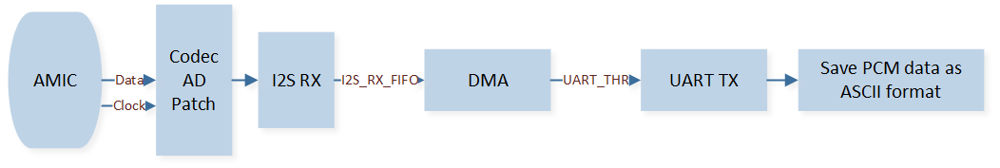

Analog Microphone
本示例实现采集 AMIC 数据，并经 CODEC 编码为 PCM 语音数据。
AMIC 采集模拟语音数据，经 CODEC 编码，送到 I2S 接收 FIFO，利用 GDMA 将数据搬运到 UART。
PC 端通过串口助手接收 UART 传输的数据，使用音频解析软件解析数据，并播放录制的语音，本示例中用到的音频解析软件是 Audacity。
环境需求
该示例的环境需求，可参考 环境需求。
此外，需要在 PC 终端安装 PuTTY 或 UartAssist 等串口助手工具以及 Audacity 等音频解析工具。
硬件连线
EVB 外接 AMIC 模块，连接 MICBIAS 和 1.8V， GND 和 GND， MIC_P 和 P2_6， MIC_N 和 P2_7;
EVB 外接 FT232 模块接收 UART 数据，连接 P3_2 和 RXD， P3_3 和 TXD 。
编译和下载
该示例的编译和下载流程，可参考 编译和下载。
测试验证
准备阶段
启动 PuTTY 或 UartAssist 等 PC 终端， 用 ASCII 接收数据， 打开 UART COM 端口， 并进行以下 UART 设置：
波特率: 3000000
8 数据位
1 停止位
无校验
无硬件流控
可以设置将输出数据字节转向文件。
启动音频解析软件， 根据 CODEC 中的设定选择解析格式， 本示例中可以参考如下 Audacity 设定。
编码: 16-bit PCM
字节序：小尾端
声道：1 声道
采样率：1600 Hz
测试阶段
开始录音到录音完成， 采集到的语音数据， Codec 编码为 PCM 数据后通过 UART 发送到 PC 终端。
使用音频解析软件查看解码后的语音波形，也可以播放语音。
代码介绍
该章节主要介绍示例中的初始化和相应功能实现的代码和流程说明。
源码路径
工程文件和源码路径如下：
工程路径:
sdk\samples\peripheral\codec\amic\proj源码路径:
sdk\samples\peripheral\codec\amic\src
初始化
外设的初始化流程可参考 General Introduction 中的 初始化流程 部分。
初始化流程包括了 CODEC / UART / I2S / GDMA 模块的初始化， 具体流程如下。
调用
Pad_Config()与Pinmux_Config()，配置 CODEC 模块对应引脚的 PAD 和 PINMUX。I2S 引脚复用分别为 BCLK_SPORT0、LRC_RX_SPORT0、SDI_CODEC_SLAVE、SDO_CODEC_SLAVE 功能。void board_codec_init(void) { Pad_Config(AMIC_MSBC_CLK_PIN, PAD_SW_MODE, PAD_NOT_PWRON, PAD_PULL_NONE, PAD_OUT_DISABLE,PAD_OUT_HIGH); Pad_Config(AMIC_MSBC_DAT_PIN, PAD_SW_MODE, PAD_NOT_PWRON, PAD_PULL_NONE, PAD_OUT_DISABLE,PAD_OUT_LOW); Pad_Config(CODEC_BCLK_PIN, PAD_PINMUX_MODE, PAD_IS_PWRON, PAD_PULL_NONE, PAD_OUT_ENABLE,PAD_OUT_LOW); Pad_Config(CODEC_LRCLK_PIN, PAD_PINMUX_MODE, PAD_IS_PWRON, PAD_PULL_NONE, PAD_OUT_ENABLE,PAD_OUT_LOW); Pad_Config(CODEC_TX_PIN, PAD_PINMUX_MODE, PAD_IS_PWRON, PAD_PULL_NONE, PAD_OUT_ENABLE, PAD_OUT_LOW); Pad_Config(CODEC_RX_PIN, PAD_PINMUX_MODE, PAD_IS_PWRON, PAD_PULL_NONE, PAD_OUT_ENABLE, PAD_OUT_LOW); Pinmux_Config(CODEC_BCLK_PIN, BCLK_SPORT0); Pinmux_Config(CODEC_LRCLK_PIN, LRC_RX_SPORT0); Pinmux_Config(CODEC_TX_PIN, SDI_CODEC_SLAVE); Pinmux_Config(CODEC_RX_PIN, SDO_CODEC_SLAVE); }
调用
Pad_Config()与Pinmux_Config()，配置 UART 模块对应引脚的 PAD 和 PINMUX。void board_uart_init (void) { Pad_Config(UART_TX_PIN, PAD_PINMUX_MODE, PAD_IS_PWRON, PAD_PULL_UP, PAD_OUT_DISABLE, PAD_OUT_HIGH); Pad_Config(UART_RX_PIN, PAD_PINMUX_MODE, PAD_IS_PWRON, PAD_PULL_UP, PAD_OUT_DISABLE, PAD_OUT_HIGH); Pinmux_Config(UART_TX_PIN, UART5_TX); Pinmux_Config(UART_RX_PIN, UART5_RX); }
执行
I2S_StructInit()和I2S_Init()， 初始化 I2S 外设。I2S0 的初始化参数配置如下：
I2S Hardware Parameters |
Setting in the |
I2S master RX |
|---|---|---|
Sample Rate (Mi) |
0x271 |
|
Sample Rate (Ni) |
0x10 |
|
Device Mode |
||
Channel Type |
||
Data Format |
||
Data Width |
执行
UART_StructInit()和UART_Init()， 初始化 UART 外设。UART 的初始化参数配置如下：
UART Hardware Parameters |
Setting in the |
UART |
|---|---|---|
UART Div |
1 |
|
UART Ovsr |
8 |
|
UART OvsrAdj |
0x492 |
|
UART Tx Dma En |
||
UART Dma En |
执行
GDMA_StructInit()和GDMA_Init()，初始化 GDMA 外设。GDMA 的初始化参数配置如下：
GDMA Hardware Parameters |
Setting in the |
GDMA Channel |
|---|---|---|
Channel Num |
0 |
|
Transfer Direction |
||
Buffer Size |
1000 |
|
Source Address Increment or Decrement |
||
Destination Address Increment or Decrement |
||
Source Data Size |
||
Destination Data Size |
||
Source Burst Transaction Length |
||
Destination Burst Transaction Length |
||
Source Address |
|
|
Destination Address |
|
|
Source Handshake |
||
Destination Handshake |
配置 GDMA 总传输完成中断
GDMA_INT_Transfer和 NVIC，NVIC 相关配置可参考 中断配置。对 CODEC 外设的初始化。
调用
CODEC_AnalogCircuitInit()初始化模拟电路。调用
RCC_PeriphClockCmd()，开启 CODEC 时钟。执行
CODEC_StructInit()和CODEC_Init()， 初始化 CODEC 外设。CODEC 的初始化参数配置如下：
CODEC Hardware Parameters |
Setting in the |
CODEC |
|---|---|---|
Mic Type |
||
MICBST Mode |
||
SampleRate |
||
I2S Data Format |
||
I2S Channel Len |
||
I2S Data Width |
||
I2S Channel Sequence |
调用
I2S_Cmd()， 使能 I2S 接收模式。调用GDMA_Cmd()， 使能 GDMA 传输。
功能实现
AMIC 收集到语音数据后，经过 CODEC 模块的 AD 转换，将语音数据放入 I2S RX FIFO 中。I2S RX FIFO 内的数据再通过 GDMA 传输到 UART TX FIFO 中，在串口助手内，将 UART 发送的数据保存到文件内，通过音频解析软件解析文件数据。 数据在各个模块的传输顺序如下图所示。
{kind=link}

数据传输模块（AMIC）
当 GDMA 传输数据量达到设定的 BlockSize 时，会触发
GDMA_INT_Transfer中断。由于音频数据在通过 CODEC 进行 AD 转换后，其数据量较大，单次 GDMA 传输无法满足需求。在中断处理函数内重新设置源端地址、目的端地址和 BlockSize，并重新使能 GDMA 传输，以确保能够连续传输大量数据。GDMA_SetSourceAddress(GDMA_Channel_AMIC, (uint32_t)(&(I2S0->I2S_RX_FIFO_RD_ADDR))); GDMA_SetDestinationAddress(GDMA_Channel_AMIC, (uint32_t)(&(UART5->UART_RBR_THR))); GDMA_SetBufferSize(GDMA_Channel_AMIC, AUDIO_FRAME_SIZE / 4); GDMA_ClearINTPendingBit(GDMA_Channel_AMIC_NUM, GDMA_INT_Transfer); GDMA_Cmd(GDMA_Channel_AMIC_NUM, ENABLE);
See Also
相关 API Reference 请查看：